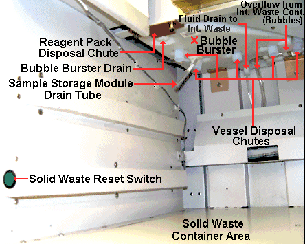
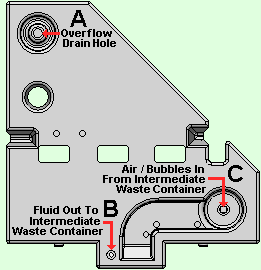
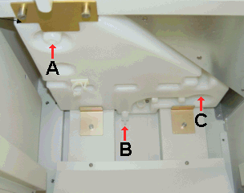

Solid Waste System Operating Principles
Purpose
This document describes the operating principles for the solid waste system.
Special Note
The DxI 600 does not have a bubble burster. All other components of the solid waste system are pertinent to the DxI 600.
Module Function
- All used RVs, DVs, and SVs.
- All emptied or expired reagent packs.
- Condensation from the sample wheel cooler.
- Condensation from the compressor system.
- Bubble overflow from the intermediate waste container.
Component Locations
The solid waste area and components are accessed from the front of the instrument between the buffer supply drawer and the bulk fluid waste drawer.



| Component | Description and Function |
|---|---|
| Waste Bag | Red biohazard bag placed in the solid waste container to collect and dispose of potentially biohazardous waste from the instrument safely. (not shown) |
| Vessel Chutes | Six chutes that reagent carriages, incubator pick-and-place, and sample pick-and-place use to dispense DVs, RVs, and SVs to waste container (four chutes in DxI 600). |
| Solid Waste Container | Large plastic container used to collect all the consumables (not shown). |
| Waste Container Door | Hinged pull-down door allowing access to the solid waste container (not shown). |
| Waste Door Interlock Switch (Door Open and Door Closed) | Electronic device that signals the position of the waste container door to the instrument software (open or closed) (not shown). |
| Solid Waste Reset Switch (Waste Container Changed) | Resets the software (screen status) that the solid waste bag has been changed.
Note: It is not necessary to push the reset switch every time the waste door is opened. Push the reset switch only when the waste bag has been changed.
|
| Bubble to Liquid Converter (Bubble Burster) DxI 800 only | Converts bubbles to a liquid, and then drains the excess liquid into the solid waste container.
Note:
|
Operational Overview
Software intervention, a waste door position switch, and a waste container reset switch control the status of the solid waste system to maintain the system operation. The table in this section lists the actions the system takes when the waste container is full, nearly full, or door is opened during operation.
| If the solid waste container | then the system: |
|---|---|
| is filled while system is running, |
|
| door is opened while system is running, |
|
| is in the instrument and is reaching capacity, |
|
Cleaning
If the area or the components of the solid waste system become dirty from a spill or leak, wipe the interior of the solid waste container and compartment with disinfectant.